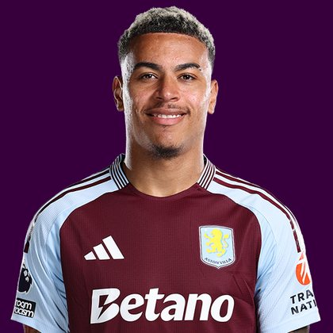

PITCHKEEP
Premier League ranks
Player File · MID CHE · Premier #28

Morgan Rogers
MID · Chelsea · age 24 · £8.3m
2025/26 Premier League
| Year | Starts | Min | G | A | xG | xA | CS | GC | Bonus | YC | Sleeper | FPL |
|---|---|---|---|---|---|---|---|---|---|---|---|---|
| 2025/26 | 11 | 970 | 5 | 2 | 3.25 | 1.54 | 2 | 20 | 3 | 3 | 75.8 | 57 |
Plus
- Premier #28. Inside the first 50 of the 400-deep hybrid.
- 75.8 Sleeper BPL 2025 points (Pitch #15).
- 5 goals, 2 assists - enough attacking return to live on a 400.
- Direct free-kick order #4.
Minus
- Board spread 2-71 (FPL Ownership to RotoWire GW1).
PitchKeep Take · The Premier
Morgan Rogers is a midfielder for Chelsea, age 24, £8.3m. The Premier ranks him 28th overall by splitting Sleeper BPL 2025 (#15, 75.8 points) with the consensus of 7 other boards (27.0). Last year's Sleeper line ran 12 spots ahead of the expert/FPL mix. The third list keeps some of that production bump and refuses to throw the other boards out. That is the whole point of not just republishing The Pitch.
The 2025/26 Premier League line is 11 starts and 970 minutes, 5 goals and 2 assists, 18 tackles and 12 CBI. Official FPL scored it at 57 points (5.2 per match) with 3 bonus. Sleeper's table turned the same counting stats into 75.8. Midfielders get 9 a goal, 6 an assist, and 1 a clean sheet, plus a full tackle/CBI stream. That is why a six who plays every week can outrank a ten-goal winger who sits.
Underlying: 3.25 xG, 1.54 xA, 4.79 xGI. He finished 1.8 above expected goals. Set pieces: direct free-kick order #4 for Chelsea. Role at Chelsea is the 2026/27 question sitting under the 2025/26 number. 11 starts is a starter. Anything under 25 starts is a rotation warning we already priced. Minutes are the skill that survives a finishing regression. The friendliest board is FPL Ownership at 2; the coldest is RotoWire GW1 at 71.
Market: £8.3m, 15 boards on the file. Price is the FPL tax, not the rank. The Premier is who produced and who the boards still believe. FPL's own EP-next is 5.3. ICT 79.6.
Instruction: he is a starter in deep Sleeper and a squad/rotation piece in 10-team FPL. Pay Premier #28 money, not a leftover 2024 reputation, not waiver dust. Nearby on The Premier: Enzo Le Fée, Cody Gakpo, David Raya Martín. Versus The Pitch (Sleeper-only #15), the hybrid moves him down to #28. That move is the third list doing its job.
He is 24, which on this board is neither a dart nor a warning label. Prime-age midfielders get ranked on what they just did and whether Chelsea still gives them the ball. 970 minutes says yes. The 2026/27 FPL price (£8.3m) is the app's guess at whether that continues. The Premier is the blend of that guess and the box score.
How to use the file: The Pitch is the Sleeper-only 400 (he is #15 there). The Premier is the 50/50 with every other board we track. Attack, Midfield, Defence, and Keepers re-rank the same Sleeper table by position. BK Value on this page follows The Premier when you are on the hybrid calculator and The Pitch when you are on the Sleeper calculator. Same curve either way - 12,000 at 1.01.
Sleeper vs FPL
Same 2025/26 line, two scoring tables
Board graph
Spread 2-71 · 15 sources
Tape · 2025/26 Premier League
Morgan Rogers Goals 2025/26 | All 13 Premier League & Europa Highlights
Every Board
Spread 2-71 · 15 sources
| Source | Rank |
|---|---|
| FPL Ownership | 2 |
| BBC Sport FPL | 4 |
| FPL Price Board | 6 |
| FPL ICT Index | 13 |
| RotoWire FPL 400 | 13 |
| The Independent Watchlist | 14 |
| Sleeper BPL 2025 | 15 |
| FPL xGI | 16 |
| FPL 2025/26 Points | 18 |
| The Athletic PL 50 | 23 |
| RotoWire Fantrax / Sleeper 400 | 24 |
| FPL EP Next | 33 |
| FPL Form | 34 |
| ESPN PL 50 | 40 |
| RotoWire GW1 | 71 |
PK News
- Man City XI vs Manchester United: Starting lineup, confirmed team news, injury latest for Premier League derby
- FPL GW11: TRANSFER PLANS | Sell Konsa? Vuskovic or De Cuyper? | Fantasy Premier League Tips 2026/27
- Transfer Rumors: Barcelona Follow Messi’s Tip; Bellingham’s Premier League Ambition
All players · The Premier · The Pitch · PK News · Calculator